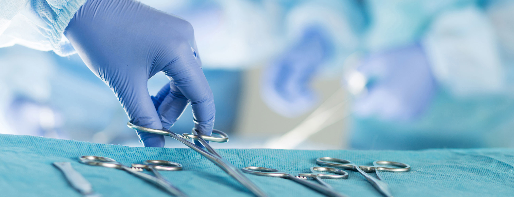

- دکتر یاسر کبیری زاده متخصص جراحی لاپاراسکوپی پیشرفته
- انجام تمام عمل های جراحی درون شکمی شامل چاقی و متابولیک به روش لاپاراسکوپی (جراحی بسته)

- بهترین و بهروزترین تجهیزات
- امکانات موجود در این مرکز از بهترین و بهروزترین امکانات موجود در این زمینه بوده و برای عمل جراحی توسط متخصصان مرکز از آنها بهره برده میشود.
- درمان چاقی و دیابت
- درمان لاپاراسکوپیک (بسته ) چاقی مرضی شامل بای پس معده، اسلیو معده و
- مینی بای پس معده توسط تیم ورزیده فوق تخصصی
- درمان چاقیهای موضعی به روش لیزر لیپولیز با پایداری طولانی مدت و با کمترین عارضه در یک جلسه
- درمان اکثر بیماریهای داخل شکم شامل کیسه صفرا، فتق، طحال، رودهها و انواع سرطانها به روش لاپاراسکوپیک
یاسر کبیری زاده متخصص جراحی عمومی و لاپاراسکوپی پیشرفته
جراح و فلوشيپ جراحى لاپاراسکوپی پیشرفته ، جراحی چاقى و متابولیک جراحی متابولیک برای درمان دیابت نوع 2
جراحی چاقی و جراحی دیابت
جراحی چاقی یا جراحی دیابت به روش لاپاروسکوپی برای درمان اضافه وزن و چاقی و دیابت نوع 2 انجام میشود . جراحی اسلیو معده یا بای پس معده و یا جراحی چاقی ...
حتما بخوانید!اقدامات لازم برای عمل جراحی چاقی
جهت انجام عمل جراحی ، بیمار لازم است اقدامات مهمی را قبل از عمل انجام دهد . ثابت شده است که انجام این اقدامات قبل از عمل جراحی و انجام مشاوره ...
ادامه مطلبویزیت پزشک جراح
شنبه و دوشنبه با نوبت قبلی و هماهنگی با منشی21:00 - 10:00 جهت کسب اطلاعات بیشتر و مشاوره روی دکمه زیر کلیک کنید
مشاوره مجازی